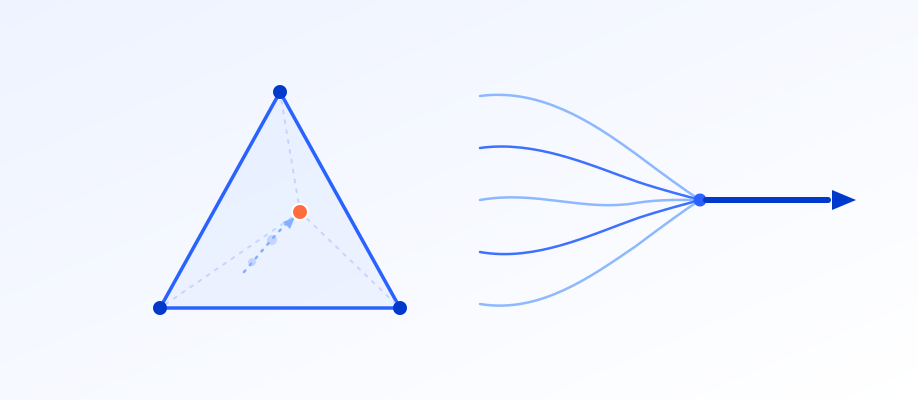

AMORE: Adaptive Multi-Objective Reward Engineering for Socratic Math Tutoring with Small Language Models
Cite
@inproceedings{baghel2026amore,
title = {AMORE: Adaptive Multi-Objective Reward Engineering
for Socratic Math Tutoring with Small Language Models},
author = {Baghel, Shruti Singh and Shukla, Amit and Goyal, Pawan},
booktitle = {ICANN},
year = {2026}
}